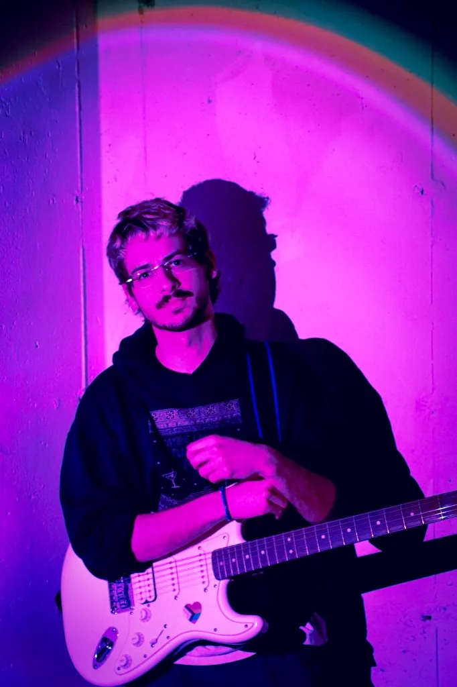

Antonio
Lead vocals · Rhythm guitar
Antonio is our lead vocalist, rhythm guitarist, and collective little brother (and quite literally Kristofer and Olivia’s youngest brother). As frontman of the band, you can count on him to create a fan experience that draws you in and keeps you in until the very last chord.